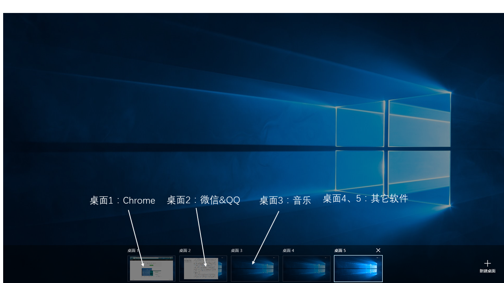

众所周知，从 Windows 8 开始，微软对自家操作系统进行了大刀阔斧的改革，其中最让我印象深刻的就是Metro 应用程序。Metro 应用是为了适应新的 Modern UI 而提出的，区别于传统 EXE
应用程序的一种新概念。
Windows 操作系统至今为止已经发展了很多代，而几乎每一代系统都会提出一种新的样式，并且在应用程序界面这方面对软件开发者并没有过多的约束。
最初，这种模式使 Windows 操作系统中的应用程序样式丰富，不单调。但是随着版本的更新迭代，这种混乱而无章法的局面给微软带来极大的困扰。对应用程序界面的不加约束，导致了 Windows 应用程序质量良莠不齐，给用户带来的的感受也是割裂的；并且
Windows 应用程序数量巨大，微软一直以来也没有像苹果一样对应用程序进行严格的审查，所以发展至今，可以说微软对此束手无策，而Windows 也一直以来饱受诟病。相比于苹果系统的协调优雅，一提到
Windows，人们想到的往往是「脏，乱，差」。
为了解决这个问题，微软在 Windows 8 操作系统中提出了完全不同于 EXE 应用的 Metro 应用程序。Metro应用程序严格遵守Windows 8的设计风格，并且所有发布的Metro应用程序必须提交给微软应用商店审核，用户也只能通过应用商店购买和下载。
对于 Metro 应用，我可以说是「一见钟情」的。应用程序与系统风格的完美统一，流畅无比的操作体验，干净清爽的应用界面以及方便统一的管理方式一度让我怀疑自己操作的是不是一台 Windows 机器。微软对其也非常满意，赋予它极大的战略意义，希望它一改现状，彻底解决
Windows 脏乱差的问题。
Universal Windows Platform apps ：Metro 2.0
在推出了 Metro 应用后，由于包括用户不习惯、软件数量少、功能残缺在内的一系列问题导致其并没有如微软想象的那样起到革命性的作用，反而招致了不少差评。
于是，在 Windows 10 操作系统中，微软将 Metro 应用回炉重造，发布了 Universal Windows Platform apps，即 UWP 应用。它继承了 Metro 应用程序能够在多平台通用的特性，并针对笔记本和台式电脑进行了更好的支持，使其更符合用户的习惯，对应用商店也进行了重做。UWP
应用相比与 Metro 适配的应用数量多了不少，并且质量也有所提高。像国内的微博、微信、QQ、网易云音乐、优酷爱奇艺等应用的 UWP 版都有不错的体验。
为什么在 Windows 10 中，我又用回了传统应用
根据上面所说的，在 Windows 10 中 UWP 应用已经很不错了，那为什么还要使用传统应用呢？
在接触 Windows 10 后，我确实尝试将生活所需的软件全部「UWP 化」。需要用到的软件只要应用商店里有全部换成 UWP 版本，甚至一些没有 UWP 版本的软件我也会去找同类型的 UWP 应用去代替它。如此使用了近半年的时间，我发现
UWP 应用虽好，但使用起来确实不如传统应用得心应手。
举几个例子。我在用网易云音乐听歌时，往往只是把它放在后台，而在 UWP 应用中，关闭其窗口就无法播放音乐，所以不得不一直保持最小化状态，让状态栏看起来十分拥挤。相同的，百度云 UWP 一旦进入后台下载就无法正常下载文件，BILIBILI
进入后台也会导致缓存文件速度大幅降低。
像微信、QQ 这种 IM 软件在关闭窗口时虽然能收到通知，但经常出现长时间的延迟或者根本不通知。后来我也找到了解决方法，即打开多个虚拟桌面，将这些软件分别放在不同的桌面，利用 Windows 10 中优化的触摸板手势很轻易的就可以切换到那个应用程序。
（参考我之前写过的一篇文章：为电脑安装精确式触摸板驱动）

但时间一长，随着打开的应用越来越多，打开的虚拟桌面也越来越多，看起来十分臃肿，而且也不是很方便。当我在 Chrome 中浏览网页时，要回复一条微信，需要先切换到微信所在的那个桌面（可能是桌面五或者六）然后回复完消息后再切换回来，特别繁琐。
反而在 windows 传统应用中，应用程序大多有最小化到托盘的功能，很多情况下你只需要随时随地在托盘图标上右键即可完成很多任务。并且大多数传统式应用出现的时间要远远早于 UWP 版，在某些功能上更为完善，比如网易云音乐的桌面歌词功能在
UWP 版中是没有的。
慢慢我发现在使用过程中，如果只看单独的一个应用，传统版和 UWP 版的区别已经很小了；但是在我们使用电脑时往往是多个程序一起打开，而 UWP 应用十分严格的后台管理反而在实际使用过程中给用户造成了很多困扰，这也是我在使用了一段时间
UWP 后回到传统应用的主要原因。
UWP 发展之我见
如上文所说，我认为 UWP 应用现在存在的最大缺点就是后台管理问题。当然，微软开发 UWP 应用的初衷是使 PC、平板电脑和手机统一应用格式，所以肯定要对后台应用进行限制以控制功耗，但现在的后台控制确实存在问题。另一个问题是软件功能残缺。相比传统版，UWP
版的很多应用客户端都缺少很多功能，比如上文提到的网易云音乐的桌面歌词还有微信的一些功能。
第三是应用数量的问题。这也是老生长谈的问题了，相比 Win8 时代，现在应用商店的应用数量已经多了很多了，但是还是不够，并且很多应用的 UWP 版都不是由软件官方开发的，安全性和稳定性都还有一些隐患。
总而言之，在 Windows 平台，UWP 应用是发展趋势。在微软前段时间发布的 Windows 10s 中，用户只能使用来自应用商店的应用程序，这也是微软希望达到的效果。但是到目前为止，只靠 UWP
应用而脱离传统应用还为时过早，从应用质量到应用数量，UWP 应用都还需继续发展完善。